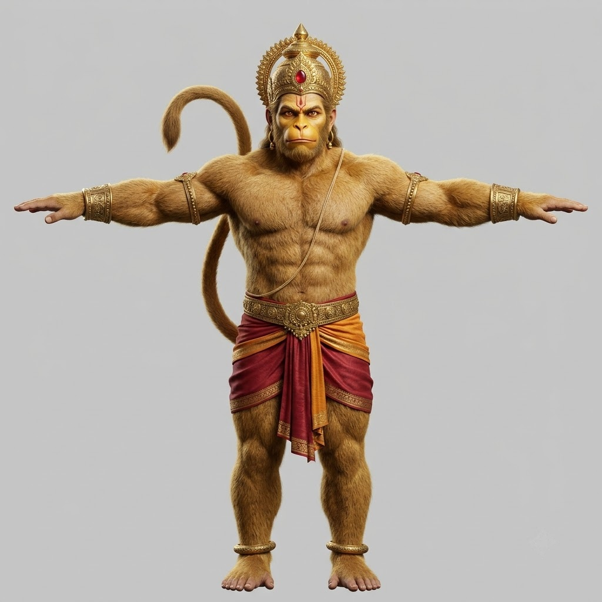
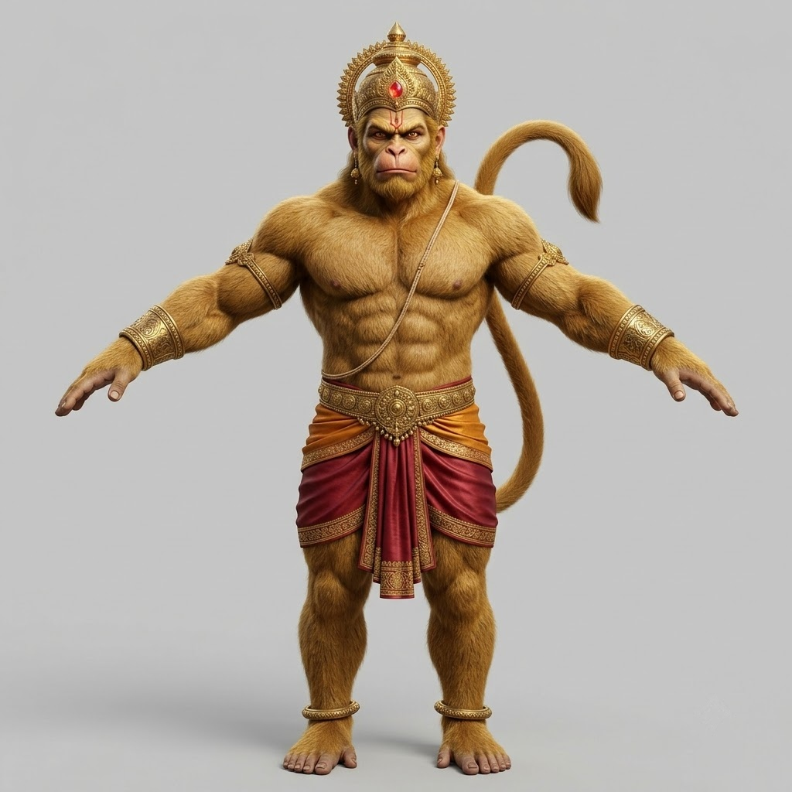
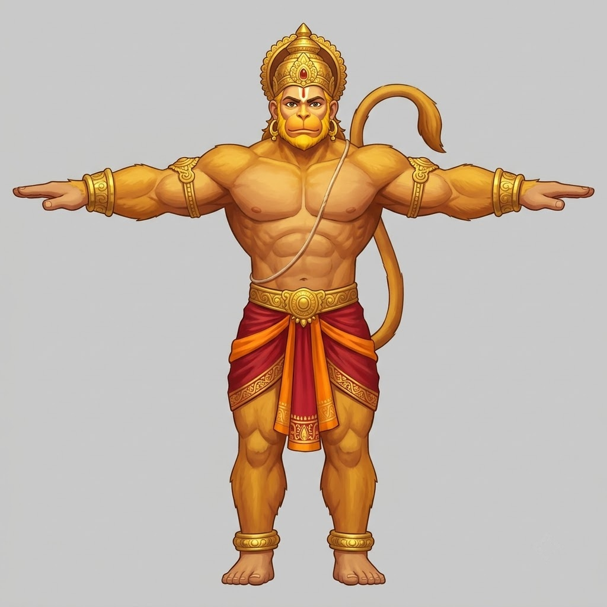
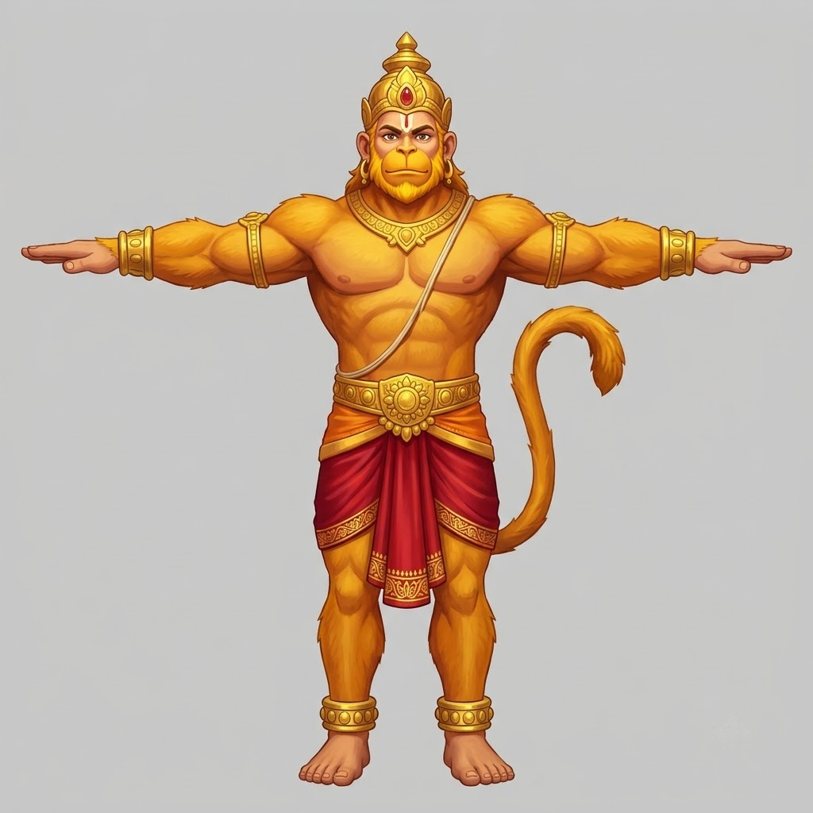
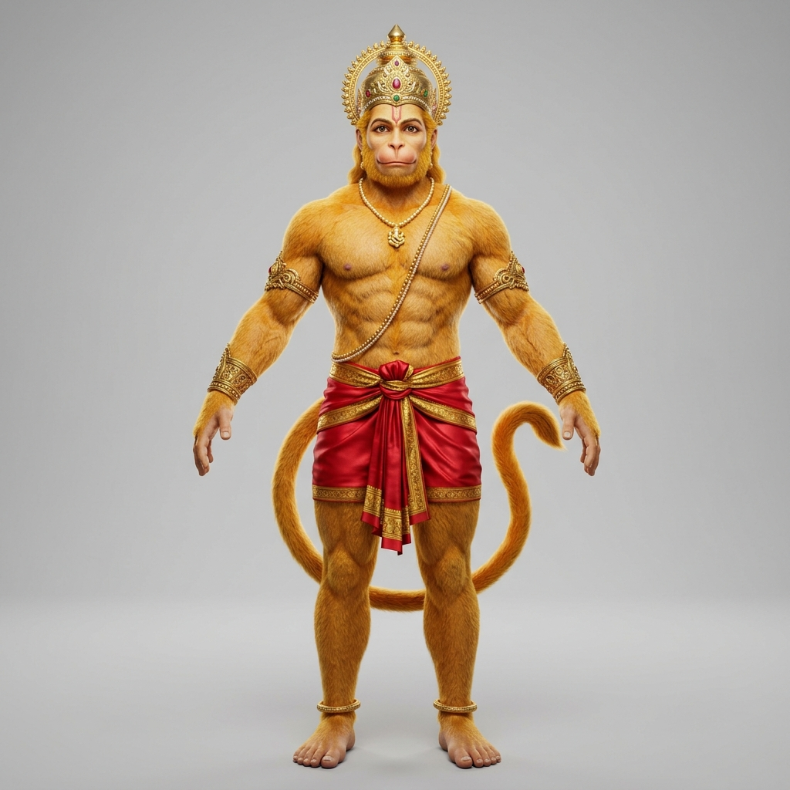
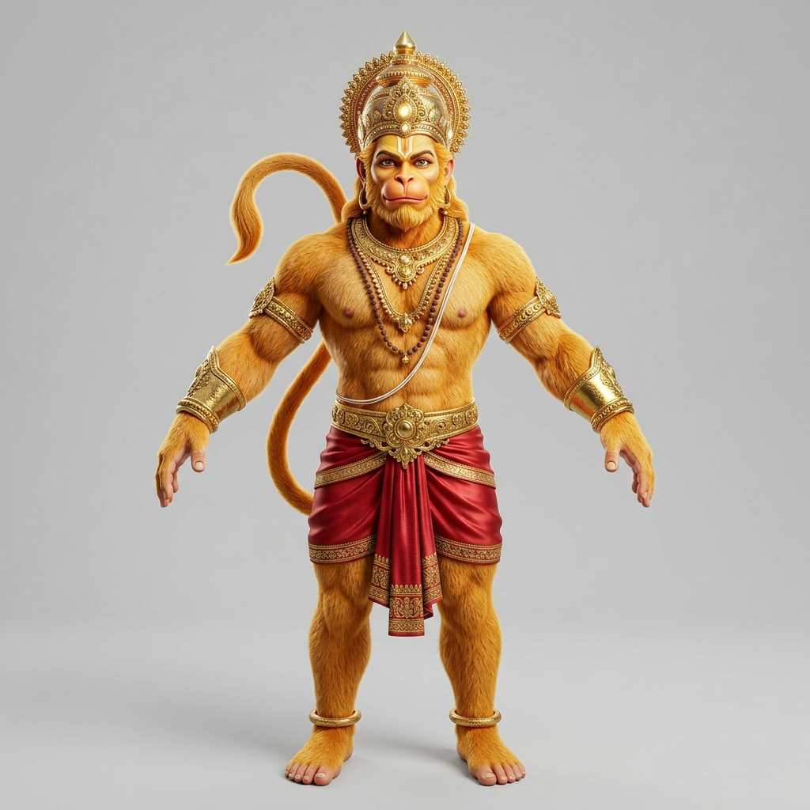

Hanuman
3dPlayer character, all three acts
3D from Lux3D
Approved image: option 1
Round 3 · Flow, realistic


prompt
Hanuman, the mighty vanara monkey god of the Ramayana, original design with real presence and character. Massively muscular warrior body, broad chest, huge shoulders and arms, powerful legs, short dense golden-brown fur. A true primate face, realistic and expressive: strong golden muzzle, deep-set intense amber eyes full of devotion and fierce resolve, furrowed brow, a red tilak on the forehead, no human beard. Long thick tail curling up behind him. Costume: tall ornate temple-gold crown with a ruby, heavy gold earrings, gold armlets, wide engraved gold bracelets and anklets, a deep red silk dhoti with a gold-embroidered border and wide gold belt, saffron sash, sacred thread across the chest. No weapon. Full body character model sheet, front view, standing in a strict T-pose: arms straight out horizontally to the sides, palms down, legs straight and slightly apart, facing the camera. Plain flat light-grey background, even soft studio light, no ground shadow, no base, no text, no watermark. Realistic cinematic AAA video game character, realistic anatomy and proportions, lifelike skin, fur and fabric detail, real metal and gemstone materials, strong personality in the face. Not cartoon, not anime, not stylized, not chibi.
Hanuman's look sets the style for everything else.
Round 2 · Flow, stylized (dropped: too cartoon)


Round 1 · Aholo image (older, not T-pose)

prompt
Concept art of Hanuman, the vanara monkey god of the Ramayana, full body front view standing in A-pose, arms angled down away from the body. A true monkey face: short golden muzzle, wide nostrils, bright intelligent eyes, no human beard. Muscular heroic body with golden-orange fur, long curled tail. Tall gold crown, gold armlets, bracelets and anklets, red silk dhoti with a gold sash, sacred thread across the chest. Stylized hand-painted game character, clean silhouette, plain light grey background, no base, no weapon.

prompt
Hanuman, the vanara monkey god of the Ramayana, as a stylized heroic action-game character: true monkey face with golden muzzle and bright eyes, broad shoulders, golden-orange fur, long curled tail, tall gold crown, gold armlets and anklets, red dhoti with gold sash, sacred thread. Standing in A-pose, arms angled down. Bolder shapes, slightly exaggerated proportions. Full body, front view, plain light grey studio background, no base, no text, game asset concept art, rich detailed painterly style.
Next: 3D, rig, animations (run, jump, roll, mace combos, hit)